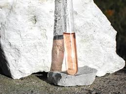
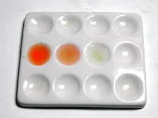

Già che siamo in tema di alcaloidi "antichi" e dopo aver chiacchierato un po' con la scorbutica coniina, perchè non ridare un attimo di gloria anche ad un'altra vecchia protagonista della chimica?
Possiamo dar sfogo alla fantasia e figurarci un attimo i vecchi laboratori di analisi come dei palcoscenici?
Non sono forse io il regista di un giocoso teatrino quando faccio interagire tra di loro i miei reagenti, per così dire... umanizzandoli?
Beh, allora io la brucina (perchè di lei oggi si parla) me la immagino interpretare la parte di una compita signorina, magra e riservata, decisa, sempre vestita con un soprabito bianco con sotto un vivace abitino rosso.
Appare raramente sul palcoscenico, in brevi uscite, ma recita a pennello e le sue battute amare sempre sul medesimo tema riscuotono ogni volta una dose calorosa di applausi.
Ha i suoi fedeli fans, insomma.
Prendendo l'occasione da una discussione, ho voluto riportare in vita nel mio scalcinato lab questa vecchia attrice, ormai sempre più zitella e sempre amarissima come un tempo, ma che ancora ricorda bene la sua parte.
Ecco il costume della brucina, con la sua bella formuletta:

Questo tossico composto è un bel reagente per la rilevazione dei nitrati: ho già detto che amo i reagenti organici nell'analisi dei cationi e degli anioni, e qui lo riconfermo!
Vieni amica rossa, vediamo come reciti dopo tanto tempo.
Si alzi il sipario!
---°°°OOO°°°---
Il metodo classico per l'analisi dei nitrati con la brucina lo leggiamo sul Treadwell: preparare il reattivo facendone una soluzione allo 0,2% in acido solforico concentrato.
Al campione in cui ricercare lo ione NO3- aggiungere un volume triplo di H2SO4 e 1 ml di reattivo; la soluzione, in caso di esito positivo, si colora in rosso vivo, che dopo qualche tempo passa all'arancio e infine al giallo verdognolo stabile.
La reazione è sensibilissima, bastano pochi ppm di nitrato per dare la colorazione nettamente visibile rispetto ad una prova in bianco.

Ritenevo che il colore rosato della soluzione fosse dovuto ad impurezze in HNO3 dell'acido solforico usato, ma non è così e la soluzione deve essere proprio rosa pallido; in ogni caso ciò non influisce minimamente nella prova.
Ho fatto il test su tre campioni di acqua:
- una "nitrata" artificialmente
- una di acqua potabile
- e una di acqua deionizzata come prova in bianco.
Per il primo campione ho usato una soluzione di 80 mg/l (ottenuta per diluizioni seccessive) di KNO3, pari a circa 50 mg/l di ione nitrico NO3-
Per il secondo campione ho usato l'acqua di rubinetto della mia zona, che secondo i dati ARPAV dovrebbe situarsi nella fascia 15-25 mg/l di nitrati.
In capsula di porcellana ho evaporato a secco 10 ml di ogni campione e ho ripreso il residuo con 3 ml di H2SO4 semiconcentrato.

15 gocce di ogni ripresa sono state messe nei tre pozzetti di una piastrina di porcellana, con l'aggiunta di 5 gocce di reattivo.
Si nota subito l'arrossamento dovuto alla presenza di nitrati, più o meno intenso a seconda della concentrazione; la prova in bianco rimane praticamente incolora.
Considerando una quantità stimata di NO3- di 20 mg/l nell'acqua di rubinetto, nel pozzetto di centro ce n'erano 0,02 mg!
Recitata la sua parte con onore, la signorina brucina si è rimessa il soprabito bianco ed è tornata modestamente nel suo camerino, dove vive da tempo immemorabile.